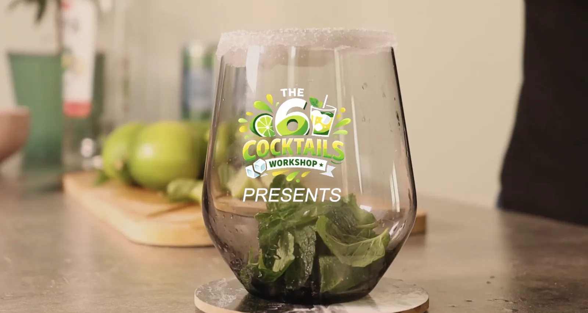

Tutoriel Mojito
Tutoriel vidéo pour apprendre à préparer un mojito, de l’écriture du script à la musique originale.
- Période
- Janvier 2026
- Contexte
- SAÉ 104 · BUT MMI 1re année
- Équipe
- 5 étudiants

Le projet
Cette SAÉ consistait à réaliser en groupe un tutoriel vidéo en respectant un cahier des charges technique : durée, types de plans et mouvements de caméra imposés.
Nous avons choisi le mojito : un sujet simple, concret et visuel, idéal pour un format tutoriel. Tout l’enjeu était de rester clair et pédagogique tout en rendant la vidéo dynamique.
- 01
Écriture
Choix du sujet et script
- 02
Préparation
Storyboard et dossier de production
- 03
Tournage
Plans et mouvements de caméra imposés
- 04
Post-production
Montage et musique originale
Ma contribution
J’ai été très impliqué dans l’écriture, le son et l’organisation du groupe :
- Écriture : rédaction du script et réalisation du storyboard, qui a servi de fil conducteur à tout le groupe.
- Organisation : supervision des documents à rendre (script, storyboard, dossier de production) pour garantir leur cohérence.
- Musique : composition d’une musique originale aux accents jazz, calée sur le rythme du montage sans couvrir la voix.